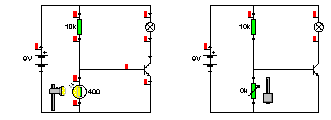
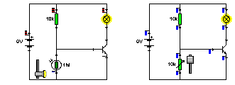

TRANSISTOR EN CORTE
He aquí dos ejemplos de circuitos con transistores en corte.
En ambos casos, la resistencia de la parte inferior es muy pequeña; en el circuito de la izquierda porque incide luz sobre la LDR y por lo tanto la resistencia es baja, y en el circuito de la derecha porque la palanca del potenciómetro está en posición de mínima resistencia.

Como la resistencia en la zona inferior es pequeña, la corriente prefiere irse por ahí y no por la base. Podríamos pensar que el circuito puede cerrarse por el colector y el emisor y encender la bombilla, pero no es así, al no haber corriente en la base no hay corriente en ningún terminal. La bombilla está apagada.
TRANSISTOR EN SATURACIÓN

Vemos los mismos circuitos que antes pero con transistores en saturación; ahora es de noche y la LDR no recibe luz por lo que su resistencia es alta. En el circuito de la derecha, la palanca del potenciómetro está en posición de máxima resistencia.
Como la resistencia en la parte inferior es muy alta, la corriente va a preferir irse por la base del transistor. Como hay corriente en la base, se permite también que haya corriente por los otros terminales; la bombilla se enciende.